Февраль 2007
Существование Шерсти и Против Шерсти было высказано ещё древнегреческими мыслителями работавшими над созданием кошачей электростанции. Но доказательств этого явления не было получено вплоть до XX века нашей эры.
В 1987 году учёными всего мира была организована научная экспедиция на далёкий северный край света.
Для высадки в безжизненном крае были арендованы поезд и железнодорожная колея, любезно предоставленные компанией «Латвийские Железные Дороги и Дёшевы».
Чтобы почувствовать себя единым целым, участники экспедиции снесли перегородки
некогда купейных вагонов, а также ненужные верхние полки.
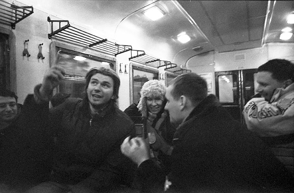
«А из этого вагона мы хотели сделать кабриолет, но испугались непогоды», — говорит экобиолог Роман Жаар
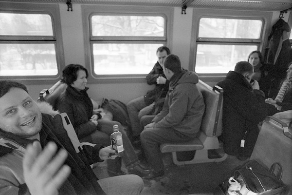
Человек улыбающийся в камеру — машинист поезда, утверждавший что поезд с рельс никуда не денется, и нефик ему тупо сидеть в локомотиве
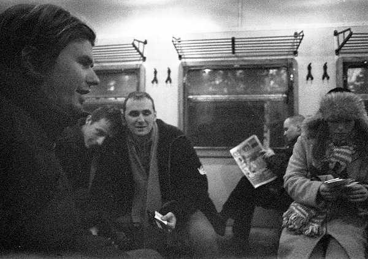
Спутниковая связь позволяла заранее заказывать экстракт Туламора на проезжаемых станциях. Ветеринар Олка Лаич (справа) пересчитывает остаток экспедиционного бюджета.
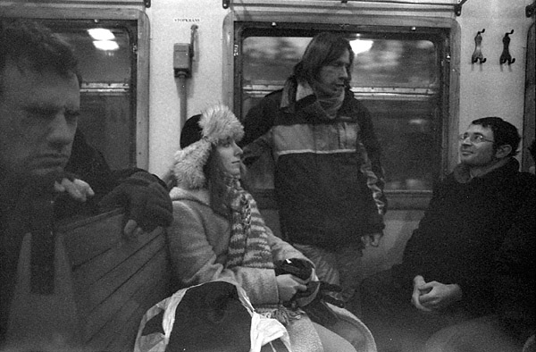
Руководитель экспедиции Зигмунд Палыч выдаёт последние внятные указания репортёру National Geografic Эду Ми Ху.
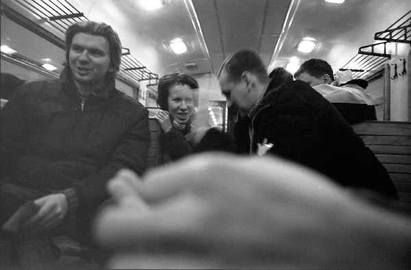
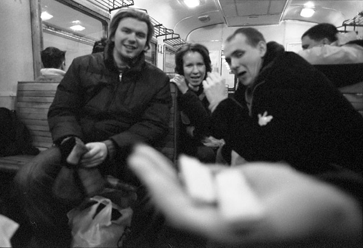
Группа стучащих товарищей, случайно заметила лёгкие наркотики. Вячеслав Павлович Базиличок был сдан местным органам власти на ближайшей станции и группа осталась без повара.
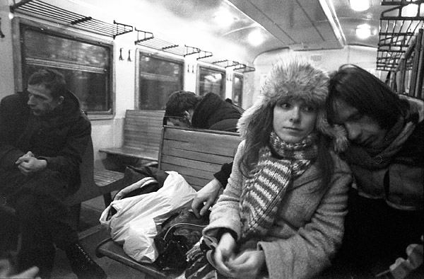
Долгая унылая дорога постепенно утомляла участников экспедиции.
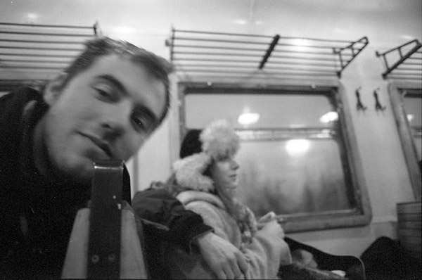
Метеоролог Артем Носков пытался определить кто прав: тупые учёные, утверждающие что минимальная возможная температура равняется 273°C с копейками, или же его приборы, которые обещают минус 286 в тени.
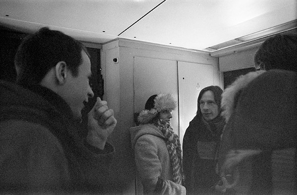
Для того чтобы высадиться в запланированном месте заранее были подготовлены «Железнодорожные батискафы» — маленькие комнатки-коробки, сбрасываемые с поезда на ходу.
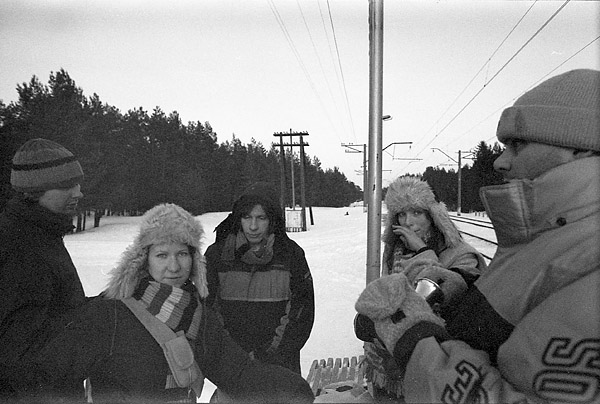
Высадка прошла мягко и никто не пострадал.
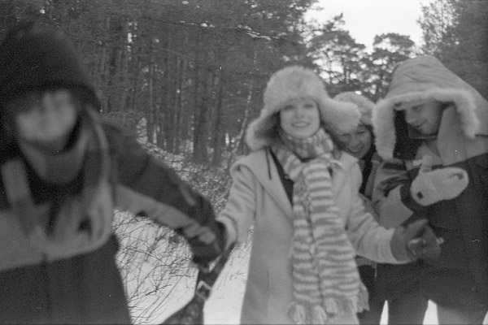
«Скорее! Нам надо убежать от волчих троп!», — кричит профессор Зигмунд Палыч.
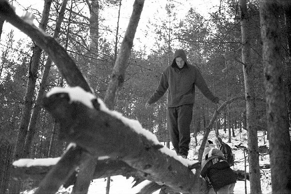
Рейнджер Кент Ричардс первым пересекает опасные пропасти на пути.
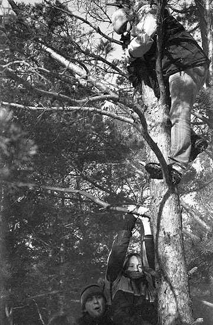
Чтобы обезопасить себя от волчих набегов,
первая ночёвка проходит на деревьях.
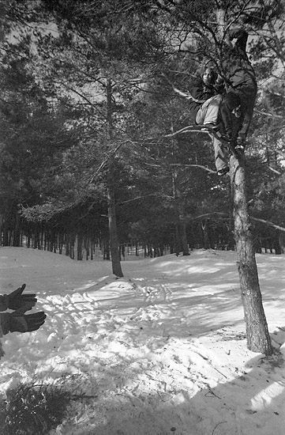
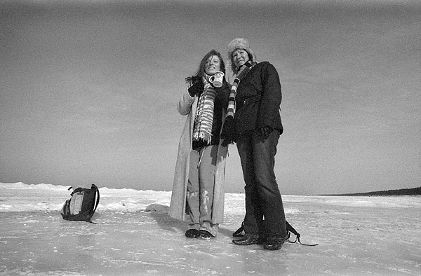
«Мы вышли на Дьявольскую Пустошь!», — говорит географ Дина Борисова (справа).
— «Здесь уже можно не боятся волков, но стоит остерегаться лохматых подлёдных акул».
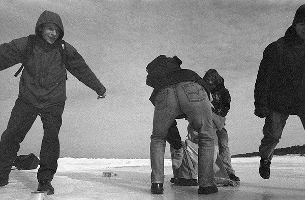
Участники экспедиции тут же принялись сверлить лёд и ставить ловушку на необычных животных.
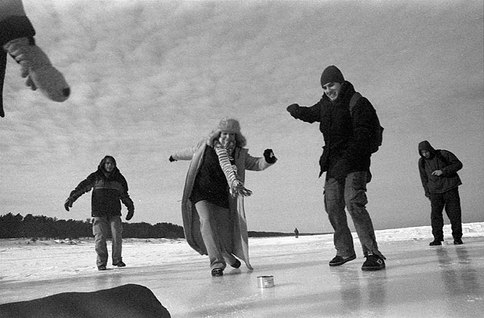
Спустя некоторое время, молодая самка попалась на консерву
(кадр снят лохматой акулой в момент ловли)
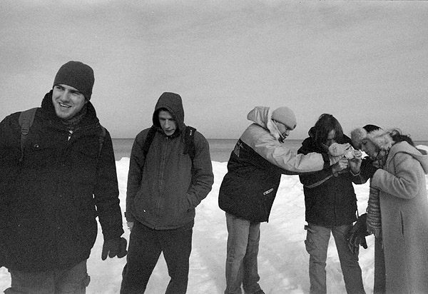
«Взгляните, коллега, по-моему содержание эритроцитов в крови совсем не соответсвует полярному климату», — учёные очень обрадовались находке.
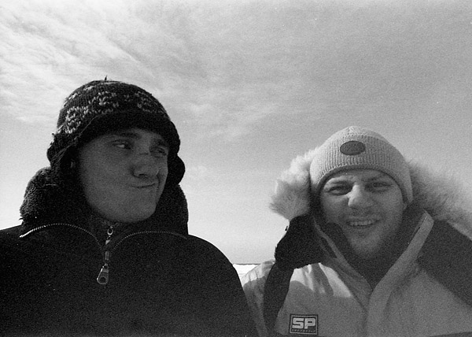
«Ты вообще в курсе, что мы в эту экспедицию взяты как водолазы?», — говорит морской эколог Алекс Варрен (слева), опасаясь что биологам не хватит одного экземпляра акулы.
Весь день экспедиция провела в поисках ушедшей на север развед-группы
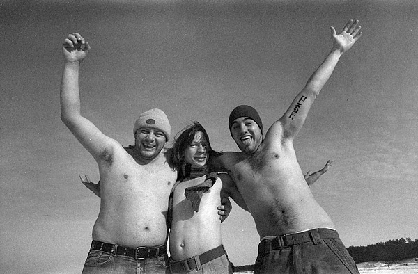
Пропавшие сожгли всю свою одежду, пытаясь дымом привлечь помощь. Не получив результата, разведчики сделали Большого Человека из собственных тел, потому как кричащего и машущего руками большого человека легче заметить, чем трёх маленьких.
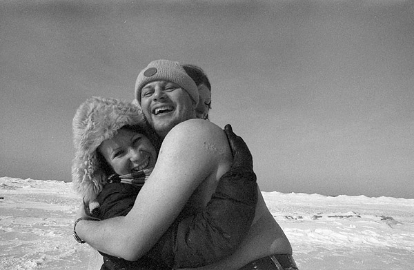
Результат оправдал себя и пропавшие были найдены к всеобщей радости.
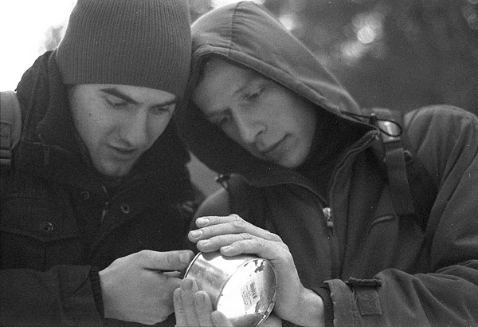
«Это последняя банка тушёнки», — говорит Кент Ричардс. — «Аккуратно, пинцетом, достань каждому его сегодняшнюю порцию»
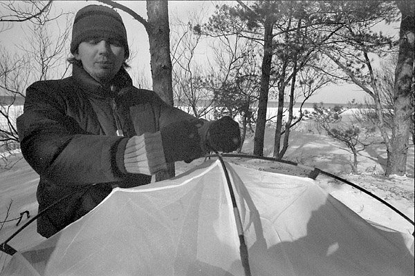
«Письмо в палатке — наша последняя надежда», — говорит Роман Жаар. — «Палатку унесёт ветром, и возможно принесёт к обитаемым берегам, где наши координаты передадут спасателям»
Эти уникальные материалы были найдены шахтёрами, добывающими кубики льда на крайнем севере для Туламора. Около уникальных материалов были найдены уникальные участники описываемой экспедиции и кости уникальной лохматой акулы, последней в своём роду. Чуть подальше всех этих уникальностей была найдена зацепившаяся за деревья обычная палатка.
Доказательство Шерсти было получено ценой многих литров и будет навеки сохранено в памяти потомков.
Текст: липа
Фотографии: эмих
По материалам журналов «Вокруг Света», «National Geografic»